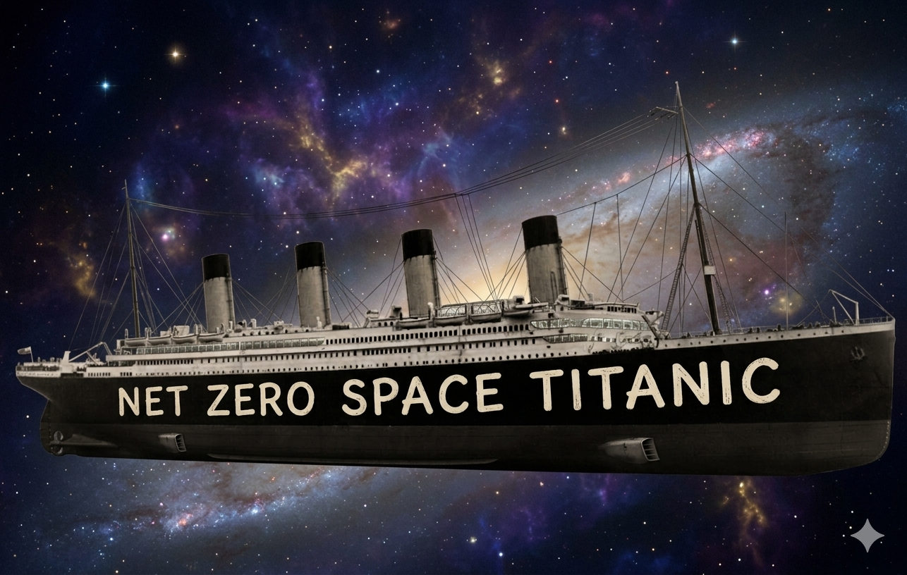

L'orbite d'Arenstorf et le Space Titanic
Une orbite qui fait la navette entre la Terre et la Lune, imaginée en 1963 pour le tourisme lunaire, sa sensibilité extrême aux conditions initiales, et ce qu'il en coûterait d'y envoyer le Titanic.
⚠ Attention spoiler. L'épigraphe ci-dessous et la section 1 révèlent des éléments de l'intrigue des romans Le Problème à trois corps et La Forêt sombre de Liu Cixin. Si vous comptez les lire, passez directement à la section 2.
« The universe is a dark forest. Every civilization is an armed hunter stalking through the trees like a ghost, gently pushing aside branches that block the path and trying to tread without sound. Even breathing is done with care. The hunter has to be careful, because everywhere in the forest are stealthy hunters like him. »
Deux corps qui s'attirent suivent des ellipses parfaitement prévisibles ; avec trois, Poincaré a montré que le mouvement peut devenir chaotique. Je m'intéresse ici à un cas particulier : un vaisseau soumis à l'attraction de la Terre et de la Lune, c'est le problème à trois corps restreint. En 1963, Richard Arenstorf a montré qu'il existe des orbites périodiques qui passent alternativement près de la Terre et de la Lune, et a proposé d'y faire circuler un « ferry » pour le tourisme lunaire. J'en intègre une numériquement, je montre pourquoi les méthodes trop simples échouent, puis je mesure son instabilité : une erreur de 38 cm au départ devient près de 900 km après un seul tour. Pour finir, je calcule ce qu'il faudrait pour lancer le Titanic depuis la Lune sur cette orbite.
1. Trois soleils
Dans Le Problème à trois corps de Liu Cixin, une civilisation vit sur une planète qui tourne autour de trois étoiles. Leurs mouvements sont imprévisibles : il y a des « ères stables », où les jours et les saisons se succèdent normalement, et des « ères chaotiques », où le soleil peut disparaître pendant des années ou au contraire tout brûler. Dans une scène du jeu vidéo du roman, un personnage s'étonne qu'on transporte un lourd sablier plutôt que de regarder le soleil pour savoir l'heure, et on lui répond :
« Le soleil ? Comment le soleil pourrait-il nous donner l'heure ? Nous sommes en pleine ère chaotique ! »
Liu Cixin, Le Problème à trois corps, trad. Gwennaël Gaffric, Actes Sud (2016).
Le roman n'exagère pas : prédire le mouvement de trois astres qui s'attirent est l'un des plus vieux problèmes de la physique, et l'un des plus difficiles. Cet article reprend un projet mené dans le cours Ordre, chaos et fractales de Christophe Bailly et Didier Dragna à Centrale Lyon, consacré à un cas particulier : celui où le troisième corps est un vaisseau de masse négligeable, entre la Terre et la Lune.
2. De Newton à Poincaré
Avec sa loi de la gravitation (1687), Newton résout complètement le problème à deux corps : chaque corps décrit une conique (ellipse, parabole ou hyperbole) autour du centre de masse, ce qui redonne les lois empiriques de Kepler. Le problème est intégrable : on peut écrire la trajectoire pour tous les temps.
Pendant deux siècles, on espère faire de même avec trois corps, au moins de façon approchée. Lagrange et Laplace développent des méthodes de perturbation qui semblent prédire un système solaire stable pour toujours. En 1885, le roi Oscar II de Suède lance un concours de mathématiques ; l'une des questions porte sur la stabilité du système solaire. Henri Poincaré le remporte en 1889 avec un mémoire sur le problème des trois corps. Mais un relecteur, Lars Phragmén, y trouve une erreur. En la corrigeant, Poincaré découvre que certaines trajectoires ont un comportement d'une complexité inouïe. La version publiée en 1890 conclut presque le contraire de la première. C'est l'acte de naissance de la théorie du chaos. Poincaré l'a résumé ainsi :
« Il peut arriver que de petites différences dans les conditions initiales en engendrent de très grandes dans les phénomènes finaux ; une petite erreur sur les premières produirait une erreur énorme sur les derniers. La prédiction devient impossible. »
Henri Poincaré, Science et méthode (1908).
3. Le problème restreint
Une simplification très utile consiste à supposer que le troisième corps (un satellite, une sonde) a une masse négligeable : il subit l'attraction des deux autres sans les perturber. C'est le problème à trois corps restreint. Si de plus les deux corps massifs tournent l'un autour de l'autre sur des cercles, on parle de problème restreint circulaire. C'est une très bonne approximation du système Terre–Lune–vaisseau spatial.
4. Le modèle
On se place dans un repère qui tourne avec la Terre et la Lune, centré sur leur barycentre. Dans ce repère, les deux corps sont immobiles. On choisit des unités où la distance Terre–Lune vaut 1, la masse totale vaut 1 et la vitesse angulaire de rotation vaut 1. Une unité de temps vaut alors 4,34 jours, et une unité de vitesse 1 024 m/s. Le seul paramètre restant est le rapport de masse
$$\mu = \frac{m_{\text{Lune}}}{m_{\text{Terre}} + m_{\text{Lune}}} \approx 0{,}012277471 .$$La Terre est alors en \((-\mu, 0)\) et la Lune en \((1-\mu, 0)\). En notant \(\mu' = 1-\mu\), les équations du mouvement du vaisseau s'écrivent
$$ \begin{aligned} \ddot x &= x + 2\dot y - \mu' \frac{x+\mu}{r_1^3} - \mu \frac{x-\mu'}{r_2^3}, \\[4pt] \ddot y &= y - 2\dot x - \mu' \frac{y}{r_1^3} - \mu \frac{y}{r_2^3}, \end{aligned} $$où \(r_1 = \sqrt{(x+\mu)^2 + y^2}\) et \(r_2 = \sqrt{(x-\mu')^2 + y^2}\) sont les distances du vaisseau à la Terre et à la Lune.
Chaque terme a un sens physique. Les termes \(x\) et \(y\) viennent de la force centrifuge, les termes en \(2\dot y\) et \(-2\dot x\) de la force de Coriolis (deux forces d'inertie dues à la rotation du repère), et les fractions sont l'attraction gravitationnelle de la Terre et de la Lune.
Une quantité conservée : la constante de Jacobi
Pourquoi l'énergie habituelle ne marche pas. Vu depuis un repère fixe, la Terre et la Lune bougent. L'attraction qu'elles exercent sur le vaisseau change donc au cours du temps, et l'énergie du vaisseau n'est pas conservée : il peut en gagner ou en perdre en passant près de la Lune (c'est le principe de l'assistance gravitationnelle). Mais dans le repère tournant, la Terre et la Lune sont immobiles, et plus rien ne dépend du temps. On peut alors espérer une quantité conservée, à condition de tenir compte des forces d'inertie.
D'où elle sort. On multiplie la première équation du mouvement par \(\dot x\), la seconde par \(\dot y\), et on les additionne. À gauche, on reconnaît la dérivée de l'énergie cinétique :
$$ \ddot x\,\dot x + \ddot y\,\dot y = \frac{d}{dt}\left( \tfrac12 \left( \dot x^2 + \dot y^2 \right) \right) . $$À droite, les termes de Coriolis disparaissent : \(2\dot y\,\dot x - 2\dot x\,\dot y = 0\). Les autres termes sont exactement la dérivée par rapport au temps de la fonction
$$ \Omega(x, y) = \underbrace{\tfrac12 \left( x^2 + y^2 \right)}_{\text{centrifuge}} + \underbrace{\frac{\mu'}{r_1}}_{\text{Terre}} + \underbrace{\frac{\mu}{r_2}}_{\text{Lune}} . $$(Par exemple, la dérivée de \(\tfrac12 x^2\) est \(x\dot x\), et celle de \(\mu'/r_1\) est \(-\mu'(x + \mu)\dot x / r_1^3 - \mu' y\,\dot y / r_1^3\) : on retrouve bien les termes des équations, multipliés par \(\dot x\) ou \(\dot y\).) On obtient donc \(\frac{d}{dt}\left( \tfrac12 v^2 \right) = \frac{d\Omega}{dt}\), où \(v^2 = \dot x^2 + \dot y^2\). La différence des deux ne varie pas, et on définit la constante de Jacobi (au facteur \(-2\) près, par convention historique) :
$$ C_J = 2\,\Omega(x, y) - v^2 = \text{constante}. $$Ce que représente chaque terme. \(C_J\) est, au facteur \(-2\) près, une énergie mesurée dans le repère tournant :
- \(v^2\) correspond à l'énergie cinétique du vaisseau, avec sa vitesse mesurée dans le repère tournant ;
- \(\mu'/r_1\) et \(\mu/r_2\) correspondent aux énergies potentielles de gravitation de la Terre et de la Lune : elles sont d'autant plus grandes qu'on est près de l'astre ;
- \(\tfrac12 (x^2 + y^2)\) correspond à l'énergie potentielle centrifuge : la force centrifuge pousse le vaisseau vers l'extérieur, d'autant plus fort qu'il est loin du centre de rotation ;
- la force de Coriolis n'apparaît pas : elle est toujours perpendiculaire à la vitesse, donc elle dévie le vaisseau sans jamais l'accélérer ni le freiner. Elle ne travaille pas, comme la force magnétique sur une charge.
Attention au signe : à cause du facteur \(-2\), une grande valeur de \(C_J\) correspond à une petite énergie, et inversement.
À quoi elle sert. D'abord à vérifier une simulation : \(C_J\) doit rester constante, et si elle dérive, c'est que le schéma numérique introduit des erreurs. Ensuite, elle donne la vitesse en tout point sans rien intégrer : \(v^2 = 2\,\Omega(x, y) - C_J\). Comme \(v^2\) ne peut pas être négatif, le vaisseau ne peut aller que là où \(2\,\Omega(x, y) \geq C_J\) : certaines régions lui sont interdites. Plus \(C_J\) est grand (moins le vaisseau a d'énergie), plus ces régions s'étendent, jusqu'à l'enfermer autour de la Terre ou de la Lune. Ces deux usages serviront plus loin, pour la section de Poincaré et pour le Titanic.
5. L'orbite d'Arenstorf
En 1963, Richard Arenstorf, mathématicien au centre spatial Marshall de la NASA, démontre l'existence de familles d'orbites périodiques qui passent près des deux corps massifs. Il voit tout de suite l'intérêt pour l'astronautique, et termine sa note par une proposition inattendue : un vaisseau lourd, protégé des radiations, circulerait en permanence sur une telle orbite, et de petites navettes le rejoindraient près de la Terre ou de la Lune.
« This would relieve the necessity to launch a heavy space ship from Earth or to assemble it in Earth orbit for every new flight to the moon and landing back on Earth. Thus tourist trips to the moon and back become practical and more economical. »
R. F. Arenstorf, AIAA Journal 1 (1963), p. 240.
Une de ces orbites est devenue un cas test classique en analyse numérique. Elle part de
$$ x_0 = 0{,}994,\quad y_0 = 0,\quad \dot x_0 = 0,\quad \dot y_0 = -2{,}00158510637908\ldots $$et sa période vaut \(T \approx 17{,}0652165601580\), soit 74 jours. Le point de départ est à 676 km d'altitude au-dessus de la Lune. Le vaisseau s'éloigne ensuite jusqu'à 474 000 km de la Terre, sans jamais s'en approcher à moins de 178 000 km.
Le passage près de la Lune est la partie délicate : \(r_2\) devient très petit, donc le terme en \(1/r_2^3\) devient énorme, et la vitesse change très vite. Une petite erreur commise à ce moment-là est fortement amplifiée par la suite.
6. Intégration numérique
Pour résoudre ces équations sur ordinateur, on les réécrit comme un système du premier ordre sur l'état \(s = (x, y, \dot x, \dot y)\) :
$$ \dot s = f(s), \qquad s(0) = s_0 .$$On avance ensuite pas à pas, avec un pas de temps \(h = T/N\).
La méthode d'Euler
C'est la plus simple : on suit la tangente pendant un pas, \(s_{n+1} = s_n + h\, f(s_n)\). Son erreur globale est proportionnelle à \(h\) (méthode d'ordre 1) : diviser le pas par 10 ne divise l'erreur que par 10.
La méthode de Runge-Kutta d'ordre 4 (RK4)
On évalue la pente en quatre points du pas, puis on en fait une moyenne pondérée :
$$ \begin{aligned} k_1 &= f(s_n), & k_2 &= f\!\left(s_n + \tfrac h2 k_1\right), \\ k_3 &= f\!\left(s_n + \tfrac h2 k_2\right), & k_4 &= f(s_n + h k_3), \\ \end{aligned} $$ $$ s_{n+1} = s_n + \frac h6 \left(k_1 + 2k_2 + 2k_3 + k_4\right). $$L'erreur est cette fois proportionnelle à \(h^4\) : diviser le pas par 10 divise l'erreur par 10 000, pour seulement quatre fois plus de calculs par pas.
Avec 10 000 pas, RK4 donne une orbite visuellement correcte, qui se referme à 0,02 près (environ 7 000 km). Il en faut 160 000 pour descendre à \(5 \times 10^{-7}\). Euler, lui, produit une trajectoire complètement fausse même avec 100 000 pas : l'erreur commise lors du passage près de la Lune l'envoie sur une orbite tout autre, voire hors du système.
ode45 de MATLAB et le
RK45 de scipy. D'après Hairer, Nørsett et Wanner, elle referme l'orbite à
\(10^{-3}\) près en seulement 98 pas, dont 24 rejetés.
7. Sensibilité aux conditions initiales
Que se passe-t-il si le vaisseau ne part pas exactement du bon point ? Dans la figure 3, on décale la position de départ \(x_0\) d'une quantité minuscule et on compare les deux trajectoires.
Dans mon projet, j'ai fait la même expérience avec des écarts de \(10^{-5}\) et \(10^{-2}\), puis suivi sur 50 périodes une trajectoire décalée de \(10^{-4}\) : au lieu de rester sur l'orbite, le vaisseau finit éjecté du système Terre–Lune. L'orbite d'Arenstorf est périodique, mais instable.
La section de Poincaré
Suivre une trajectoire en quatre dimensions \((x, y, \dot x, \dot y)\) n'est pas commode. L'idée de Poincaré est de ne regarder que les instants où elle traverse une surface donnée, ici l'axe \(y = 0\) parcouru vers le bas (\(\dot y < 0\)), et de noter à chaque passage la position \(x\) et la vitesse \(\dot x\). Comme la constante de Jacobi \(C_J\) est fixée, ces deux nombres suffisent à retrouver \(\dot y\) : on obtient un nuage de points dans un plan.
La forme de ce nuage dit tout du mouvement :
- une orbite périodique donne un nombre fini de points, toujours les mêmes. L'orbite d'Arenstorf coupe l'axe trois fois par période, d'où les trois gros points jaunes ;
- une orbite quasi-périodique, qui vit sur un tore KAM, dessine une courbe fermée ;
- une orbite chaotique remplit une zone de points éparpillés, et finit souvent par s'écraser sur la Lune ou quitter le système.
À l'énergie de l'orbite d'Arenstorf (\(C_J \approx 2{,}856\)), on voit cohabiter les deux mondes. Près de la Terre, les trajectoires dessinent de belles courbes fermées : ce sont des tores KAM, et le mouvement y est stable. Plus loin, les trajectoires qui passent près de la Lune sont chaotiques et finissent pour la plupart écrasées ou éjectées. L'orbite d'Arenstorf est un point fixe au milieu de cette zone chaotique : sa voisine décalée de \(10^{-4}\) s'en éloigne en quelques passages, puis quitte le système au bout de 27 traversées. En augmentant \(C_J\) au-delà de 3,19 (la valeur du point de Lagrange L1), la région autour de la Terre se referme et le vaisseau ne peut plus rejoindre la Lune.
L'exposant de Lyapunov
Pour un mouvement chaotique, un petit écart entre deux trajectoires grandit en moyenne comme une exponentielle, \(\delta(t) \approx \delta_0\, e^{\lambda t}\). Le nombre \(\lambda\) est l'exposant de Lyapunov, et son inverse \(1/\lambda\), le temps de Lyapunov, est l'horizon de prédiction : à chaque fois que cette durée s'écoule, l'erreur est multipliée par environ 2,7. Dans mon projet, je l'ai estimé en suivant un « essaim » de quatre trajectoires très proches de l'orbite : \(\lambda \approx 0{,}41\), soit un temps de Lyapunov d'environ 2,5 unités de temps, c'est-à-dire 11 jours, bien moins qu'une période de 74 jours. La figure 3 le montre concrètement : un écart de quelques centimètres au départ devient des dizaines de kilomètres après un seul tour.
En pratique, un vaisseau sur cette orbite devrait corriger sa trajectoire en permanence. Arenstorf le savait : il précisait que les perturbations « could be controlled essentially by employing continuous electric or other propulsions ».
8. Le Net Zero Space Titanic

Prenons Arenstorf au mot : quel « ferry lourd » plus symbolique que le Titanic ? On suppose qu'il est déjà posé sur la Lune, et qu'on veut le lancer directement sur l'orbite d'Arenstorf.
La vitesse à fournir
Sur l'orbite, au point de départ, le vaisseau va à \(|\dot y_0| \times 1\,024\) m/s, soit environ 2,05 km/s. Mais ce point est à 676 km d'altitude : depuis le sol, il faut d'abord sortir du puits de gravité de la Lune. La constante de Jacobi permet de calculer la vitesse nécessaire. La Lune tourne toujours la même face vers la Terre, donc un point de sa surface est immobile dans le repère tournant. Pour qu'une trajectoire partant du sol rejoigne l'orbite, elle doit avoir la même constante \(C_J\), d'où la vitesse minimale au décollage :
$$ v_{\text{sol}} = \sqrt{2\,\Omega(x_{\text{sol}}, 0) - C_J} \approx 2{,}35 \ \text{unités} \approx 2{,}41 \ \text{km/s}. $$C'est un minimum : une vraie poussée qui dure plusieurs minutes perd en plus de la vitesse à lutter contre la gravité lunaire.
La fusée
L'équation de Tsiolkovski relie la vitesse gagnée \(\Delta v\) au rapport entre la masse au départ \(m_0\) et la masse à l'arrivée \(m_f\) :
$$ \Delta v = v_e \ln \frac{m_0}{m_f}, \qquad v_e = I_{sp}\, g_0 . $$J'ai pris des moteurs Raptor 3 de SpaceX : 280 tonnes-force de poussée et 1 525 kg chacun, avec une impulsion spécifique de 380 s (valeur typique dans le vide), donc \(v_e \approx 3{,}7\) km/s. Le Titanic avait un déplacement de 53 147 tonnes. Pour atteindre 2,41 km/s, il faut \(m_0 / m_f = 1{,}91\) :
- 48 500 tonnes de méthane et d'oxygène liquides ;
- une masse totale au décollage de 101 900 tonnes ;
- 149 moteurs pour fournir la vitesse en 10 minutes de poussée.
Le budget
Toutes les valeurs sont en dollars américains, avec des sources que j'indique en fin d'article. Certaines sont des objectifs annoncés plutôt que des prix constatés : il s'agit d'ordres de grandeur.
| Poste | Hypothèse | Coût (milliards de $) |
|---|---|---|
| Le navire | Réplique « Titanic II » de Clive Palmer, estimée entre 500 M$ et 1 Md$ [5] | 0,5 à 1 |
| 149 moteurs Raptor | Entre 250 000 $ (objectif de production) et 1 M$ (coût de 2019) l'unité [6] | 0,04 à 0,15 |
| 48 500 t d'ergols | Environ 200 $ la tonne sur Terre [7] | 0,01 |
| Tout amener sur la Lune | 101 900 t, entre 100 000 $/kg (objectif Starship) et 1,2 M$/kg (tarif actuel des atterrisseurs) [8] | 10 000 à 122 000 |
| Total | ≈ 10 000 à 122 000 |
Le carburant et les moteurs ne coûtent presque rien : tout le prix vient de l'acheminement jusqu'à la Lune. Dans le scénario optimiste, l'opération coûte environ 9 % du PIB mondial de 2025 (environ 117 000 milliards de dollars [9]) ; dans le scénario actuel, un peu plus que le PIB mondial entier. C'est entre 70 et 800 fois le coût de la Station spatiale internationale (environ 150 milliards de dollars [10]).
Et pour le « Net Zero » ? Il faudrait produire le carburant sur place. L'oxygène, on peut l'extraire des roches lunaires. Mais la Lune contient très peu de carbone : fabriquer du méthane sur place est une autre histoire. Arenstorf avait raison sur un point : mieux vaut un ferry qui reste en orbite qu'un paquebot qu'on relance à chaque voyage.
9. Intérêt et applications
Au-delà de la blague, le problème à trois corps restreint est au cœur de la conception des missions spatiales :
- Trajectoires à retour libre. Les missions Apollo utilisaient des trajectoires qui contournent la Lune et reviennent vers la Terre sans propulsion. C'est grâce à une telle trajectoire que l'équipage d'Apollo 13 a pu rentrer après l'explosion d'un réservoir d'oxygène.
- Points de Lagrange. Ce même modèle prédit cinq points d'équilibre. Le télescope James Webb est placé sur une orbite autour du point L2 du système Soleil–Terre.
- Transferts à basse énergie. En exploitant finement la dynamique à trois corps, on peut rejoindre la Lune avec beaucoup moins de carburant, au prix d'un trajet plus long. La sonde japonaise Hiten a été sauvée ainsi en 1991.
- Banc d'essai numérique. L'orbite d'Arenstorf sert de test standard pour les solveurs d'EDO, justement parce qu'elle punit les méthodes peu précises.
Ce que j'en retiens : le choix de la méthode numérique n'est pas un détail technique. Sur un problème sensible, une méthode d'ordre faible ne donne pas seulement un résultat un peu imprécis, elle donne un résultat qualitativement faux. Et même avec une méthode parfaite, la sensibilité aux conditions initiales limite ce qu'on peut prédire : il faut corriger la trajectoire, pas seulement bien la calculer.
10. Références
- R. F. Arenstorf, Existence of periodic solutions passing near both masses of the restricted three-body problem, AIAA Journal 1 (1963), p. 238–240, doi:10.2514/3.1516.
- R. F. Arenstorf, Periodic solutions of the restricted three body problem representing analytic continuations of Keplerian elliptic motions, American Journal of Mathematics 85 (1963).
- E. Hairer, S. P. Nørsett, G. Wanner, Solving Ordinary Differential Equations I: Nonstiff Problems, 2e éd., Springer (1993), chapitre II. L'orbite d'Arenstorf y sert d'exemple dès l'introduction.
- C. Bailly, D. Dragna, Ordre, chaos et fractales, cours de l'École Centrale de Lyon, S8 (2026) ; L. V. Vela-Arévalo, J. E. Marsden, Time–frequency analysis of the restricted three-body problem, Classical and Quantum Gravity 21 (2004).
- Titanic II : Cruise Industry News (mars 2024) ; déplacement du Titanic : Encyclopedia Titanica.
- Raptor 3 (poussée, masse) : New Space Economy (2026) ; coût : The Space Bucket.
- Coût des ergols : Inverse (environ 900 000 $ par lancement de Starship selon Elon Musk) ; Scanalyst (oxygène liquide autour de 0,20 $/kg).
- Transport vers la surface lunaire : TechCrunch et guide utilisateur d'Astrobotic (1,2 M$/kg) ; Universe Magazine (objectif d'ispace avec Starship, environ 100 000 $/kg).
- PIB mondial 2025 (FMI) : StatisticsTimes.
- Coût de la Station spatiale internationale (estimation de l'ESA) : CBC.
- H. Poincaré, Sur le problème des trois corps et les équations de la dynamique, Acta Mathematica 13 (1890) ; Science et méthode, Flammarion (1908).
- Liu Cixin, Le Problème à trois corps (2006) et La Forêt sombre (2008), trad. Gwennaël Gaffric, Actes Sud.
Le code des simulations est lisible directement dans arenstorf.js.